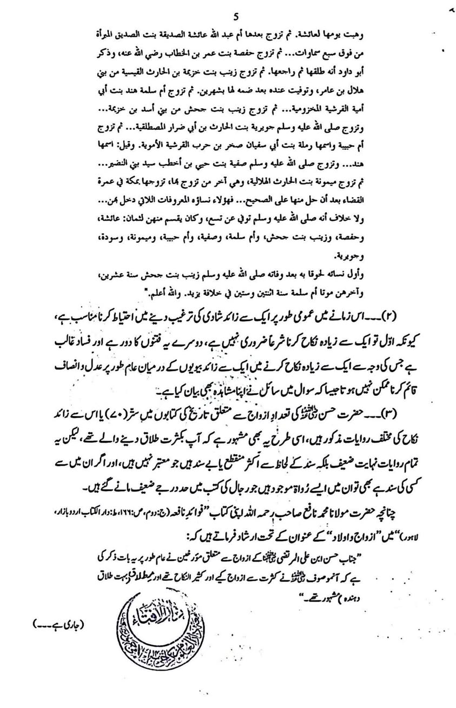
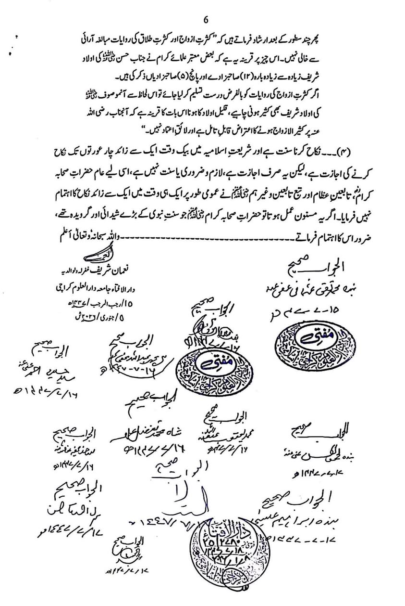

আমি সবসময়ই বলি— ইসলামি শরিয়তে একাধিক বিয়ে সুন্নাহ হওয়ার কোনো একটি প্রমাণও বিদ্যমান…
৭ মে, ২০২৬
1.
আমি সবসময়ই বলি— ইসলামি শরিয়তে একাধিক বিয়ে সুন্নাহ হওয়ার কোনো একটি প্রমাণও বিদ্যমান নেই। একাধিক বিয়ে জাস্ট একটি মুবাহ বা বৈধ কাজ। কিন্তু একাধিক বিয়ে করে নিজেকে সুন্নাহপ্রেমী হিসেবে জাহির করতে কিংবা বহুবিবাহ নিয়ে বিজনেস করতে গেলে "সুন্নাহ" "সুন্নাহ" বলে স্লোগান তুলাটা জরুরি। যে কারণে তারা দাবির পক্ষে খুবই খোঁড়া খোঁড়া যুক্তি পেশ করতে বাধ্য হন। ক্ষেত্রবিশেষে কোরআন ও হাদিসের অপব্যাখ্যা করতেও পিছপা হন না অনেকেই।
ইন্টারেস্টিং বিষয় হল— চলতি বছরে করাচি থেকে প্রকাশিত জাস্টিজ তাকি উসমানি সাক্ষরিত ফতোয়ায়ও একাধিক বিয়ে সুন্নাহ হওয়াকে অস্বীকার করে এটিকে জাস্ট বৈধ আখ্যা দেয়া হয়েছে। এমনকি একাধিক বিয়েতে উৎসাহিত করার ব্যাপারেও সতর্কতা অবলম্বন করলে বলা হয়েছে।
2.
হযরত হাসান রা-এর ব্যাপারে বলা হয়ে থাকে, তিনি প্রায় ৭০ টি বা তারও অধিক বিয়ে করেছিলেন। তিনি খুব বেশি বেশি তালাক দিতেন। কিন্তু উক্ত ফতোয়ায় এ সংক্রান্ত ঐতিহাসিক সকল বর্ণনাকে ভিত্তিহীন, মুনকাতে', মারাত্মক জয়িফ-দুর্বল ও অতিরঞ্জন আখ্যা দেয়া হয়েছে।
ফতোয়া পোস্টে যুক্ত করা হল। পড়ে দেখতে পারেন।

